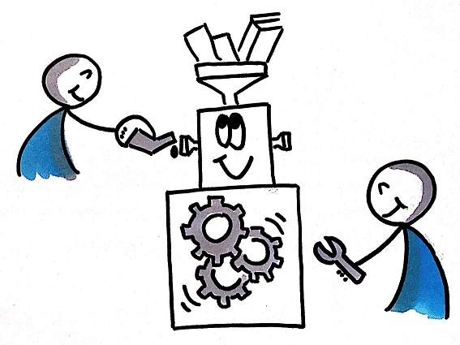

ABOUT LADAL

The LADAL is a collaborative effort that is sponsored by the School of Languages and Cultures at the University of Queensland. If you are interested in becoming an affiliate member or even a contributor contact the LADAL team via email (ladal@uq.edu.au).
USER STORIES
We are currently looking for user stories (also known as testimonials) to see and show what people use LADAL resources for. If you have used LADAL resources - be it by simply copying some code, attending a workshop, learning about a method using a tutorial, or in any other way - we would be extremely grateful, if you would send us your user story!
To submit your user story, simply write up a paragraph describing how you have used LADAL resources and what you have used them for and send it to ladal@uq.edu.au. We really appreciate any feedback from you about this!
DIRECTORS
Martin is Lecturer in Applied Linguistics at the School of Languages and Cultures at the University of Queensland, Australia as well as Associate Professor and Lab Director at the AcqVA-Aurora Center at Arctic University of Norway in Tromsø .
Martin has initiated and established LADAL and is its leading proponent. His role at LADAL encompasses creating content, supervising team members, and directing the activities at LADAL. He is a language data scientist with a PhD in English linguistics specialized in corpus linguistics, computational analyses and visualization of linguistic data.
Michael is Full Professor of Linguistics and Applied Linguistics at School of Languages and Cultures, a Fellow of the Australian Academy of the Humanities, and project lead of the Australian Text Analytics Platform (ATAP) as well as the Language Data Commons of Australia (LDaCA)
Michael is supervising and managing the activities of LADAL and overseeing its promotion. He is a long-standing proponent of Digital Humanities in Australia and globally with a special focus on data management and the accessibility and usability of language data
CONTRIBUTORS | MEMBERS
Contributors are actively engaged in the LADAL and assist in the development of LADAL infrastructure or resources.
Laurence Anthony is full professor in the Faculty of Science and Engineering, Waseda University, Japan.
His research is focused on language data science, educational technology, corpus linguistics, and science communication. He is also the CEO of AntLab Solutions, a startup company that provides educational software solutions and consulting services for individual researchers, academic institutions, small venture businesses, as well as national and multinational corporations.
Laurence has written code in various languages with Python and Javascript being his languages of choice.
Ben Foley was the project manager of CoEDL’s Transcription Acceleration Project (TAP).
Ben has specialized on speech recognition and the development of user-friendly speech recognition tools.
Ben’s previous experience with Aboriginal and Torres Strait Islander language resource development has resulted in apps and websites galore. Highlights include the Iltyem-iltyem sign language database and website, and the Gambay First Languages Map, showing the hundreds of languages in Australia.
Stefan is full professor of linguistics in the Department of Linguistics at the University of California, Santa Barbara (UCSB), Honorary Liebig-Professor and Chair of English Linguistics at the Justus-Liebig-Universität Giessen, Germany.
His research is mainly situated at the intersection of quantitative corpus linguistics, cognitive linguistics, computational linguistics, and L1/Ln acquisition. Stefan’s research also uses experimental methods.
Stefan is a major proponent of using the open source software R in language data science.
Andreas Niekler is a research associate in Computer Science at the University of Leipzig and he develops computer-based methods in the field of semantic properties in language and language-based AI.
He develops computer-based algorithmic methods for computational social science, including the Postdemocracy and Neoliberalism project and the interactive analysis platform Leipzig Corpus Miner (iLCM).
The focus is on machine learning methods and data management. This includes processing of unstructured data for knowledge and document management.
Gregor is a Senior Researcher in Computational Social Science at the Leibniz Institute for Media Research │ Hans Bredow Institute (HBI).
Together with Sascha Hölig he heads the Media Research Methods Lab (MRML) where he focuses on the development of methods and applications of natural language processing and text mining for empirical social and media research.
After studying in Leipzig and Miami, USA, Gregor worked at the Computer Science departments of the universities of Leipzig and Hamburg.
Erich is a British Academy Global Professor in linguistics at the University of Surrey, UK.
His research is in phonology and morphology, especially of Australian Indigenous languages, and the modeling of language evolution and diversification.
He is an active creator and analyzer of large scale cross-linguistic data sets, for investigating the nature and origins of linguistic diversity.
Stephane has worked for the last 10 years at the University of Queensland (UQ) and he is the leading proponent of computational up-skilling at the UQ library
After completing a master’s degree in plants science and ecology in France, he worked in research but moved to a Technology Trainer position at the UQ Library in 2018 that allowed him to share data analysis best practice skills, and promote Open Source tools for research.
He has extensive experience in several programming environments and teaching courses on computation at various levels of competence
Joe is a Senior Lecturer and computational linguist at the University of Helsinki
His research interests primarily center on issues related to English phonetics and phonology, reproducible research, and the digital humanities.
Teaching-wise, he is especially interested in exploring how digital technology can enhance student learning. (Joe’s GitHub repo)
Dr. Sam Hames is a research fellow in computational humanities with UQ’s School of Languages and Cultures and also works on the Language Data Commons of Australia and the Australian Text Analytics Platform. Sam’s PhD was on machine learning for medical imaging analysis, and he has an extensive background as a data-focused software developer supporting social media and web researchers. His primary research focus is to understand how computation can enable qualitative and interpretive inquiry across the humanities and social sciences.
AFFILIATE MEMBERS
Affiliate members support the LADAL and are informed about events, workshops, and training opportunities at LADAL.
Gerold Schneider (University of Zurich, Switzerland)
Monika Bednarek (University of Sydney, Australia)
Laurence Anthony (Waseda University, Japan)
Peter Crosthwaite (The University of Queensland, Australia)
Simon Musgave (Monash University, Australia)
COLLABORATIONS
Collaborating institutions and organizations support LADAL and share information or resources with LADAL.
The School of Languages and Cultures at the University of Queensland

The Text Crunching Center at the University of Zurich (UZH)
The Sydney Corpus Lab at The University of Sydney
VARIENG at the University of Helsinki

The AcqVA Aurora Lab in the UiT Aurora Center for Language Acquisition, Variation & Attrition at The Arctic University of Norway in Tromsø. (AcqVA Aurora Lab’s GitHub repo)

The Media Research Methods Lab (MRML) at the Leibniz Institute for Media Research │ Hans Bredow Institute (HBI). .
FORMER MEMBERS
Former members were engaged with LADAL but have taken up new positions, changed affiliations, or moved institutions resulting in parting trajectories.